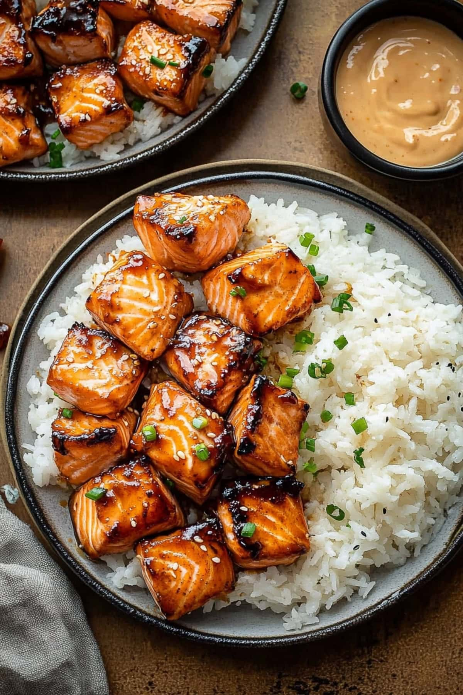

Home
Bang Bang Salmon Bites

Description:
These bang bang salmon bites are dangerously addictive! Seriously, once you start, it’s so
hard to stop. Imagine tender, juicy salmon with a smoky seasoning, coated and drizzled in a
creamy, sweet-spicy sauce.
Ingredients:
- Skinless Salmon Fillet
- Olive Oil
- Seasonings: Paprika, garlic powder, onion powder, salt, and pepper. Can add chili flakes.
- Mayonnaise
- Thai Sweet Chili Sauce
- Sriracha
- Honey
- Soy Sauce
- Minced Garlic
Steps:
- WHISK the olive oil, paprika, garlic powder, onion powder, salt, pepper, and cayenne in a
large bowl.
- ADD the salmon cubes and toss gently to coat. Set aside.
- MIX the mayonnaise, sweet chili sauce, Sriracha, soy sauce, honey, and garlic in a
separate bowl. Adjust to taste.
- SCOOP half the sauce into the salmon bowl. Toss gently to coat. Cover and chill the
remaining sauce.
- AIR FRYER – PREHEAT the air fryer to 390–400°F (200°C). Spray or brush the basket with oil.
- ARRANGE salmon cubes in a single layer and cook for 8–10 minutes, flipping halfway.
- OVEN – PREHEAT oven to 400°F (205°C) and line a baking sheet with parchment.
- PLACE salmon cubes on the sheet in a single layer and bake for 10–12 minutes.
- SERVE immediately with reserved sauce. ENJOY!